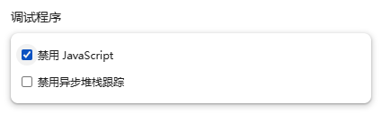
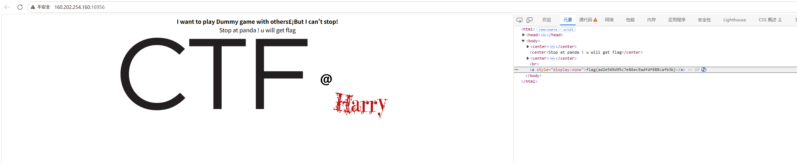

你必须让他停下
📌 题目信息
- 题目名： 你必须让他停下
💥 解题过程
- F12 打开开发者工具，展开所有代码。
- 发现图片路径一直在更改，其中图片正常显示的路径后面是正确的 flag。
- 由于页面刷新太快，通过拍屏的方式成功获得 flag。
📝 收获
这道题的考点
前端反调试：用 JavaScript 制造"无限刷新"干扰你，考察你如何让这段 JS 失效。
原理：为什么这样能拿到 flag
页面里这段代码每 0.5 秒强制刷新一次网页：
function myrefresh() {
window.location.reload();
}
setTimeout('myrefresh()', 500);setTimeout(函数, 毫秒)表示"等 500 毫秒后执行这个函数"。window.location.reload()就是刷新页面。刷新后又重新执行这段代码 → 无限循环。- 麻烦在于：你在 F12 里改的代码，页面一刷新就被重置了。所以破解的核心是——让这段 JS 不执行，或者让它慢到你有时间操作。
可复用的思路（下次遇到同类题）
- 禁用 JavaScript（我用的是这个）：F12 → 按
F1打开设置 → Debugger（调试程序）→ 勾选 Disable JavaScript。刷新逻辑直接失效，页面停住。 - 把延时改大：在 Elements/Sources 里把
500改成99999999（约 27 小时），页面就不会频繁刷新了。 - 下断点：Sources 面板找到那段 JS，在
reload那行左侧点一下打断点，JS 会暂停执行。 - 清掉定时器：Console 里执行
clearTimeout(定时器ID)（要先知道 ID，不太方便）。
延伸知识
- 前端反调试的常见套路还有：无限
debugger语句、检测开发者工具是否打开、禁用右键/F12、定时清空控制台。 setTimeout只执行一次，setInterval会一直重复执行——看到"每隔 X 秒"多半是后者或递归调用。
防御视角
前端反调试只能"提高门槛"，不能真正保护数据——攻击者禁用 JS 就全失效了。真正的校验必须在后端完成。这也正是这题最想告诉你的：前端的一切限制都是可以绕过的。
踩坑提示
- 拍屏虽然能拿到 flag，但效率很低；禁用 JS 优雅得多（这次两种方法我都试过，对比很明显）。
- 禁用 JS 后记得改回来，否则其他正常网站也会显示异常。
再尝试：禁用 JavaScript
既然页面是靠 JavaScript 实现无限刷新的，那么直接给它“ban”掉不就好了吗？
操作步骤：
- 按 F12 打开控制台，再按 F1 打开设置。
- 在“调试程序”（Debugger）中勾选“禁用 JavaScript”。

果然停下来了！再刷新网页到想要的位置，从而获得 flag。

🎁 获得奖励
1 金币 10 积分